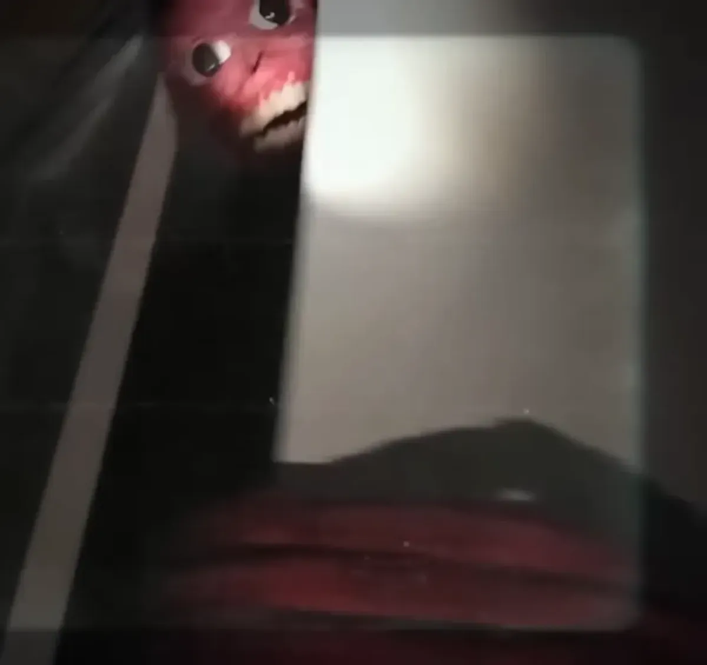

this is where i am going to store funny living meat things
this is a trimming they are harmless and are oftenly keeped as pets
 click here to go to the wiki about trimmings
click here to go to the wiki about trimmings
this is a crawl they spawn the meat things like the trimmings and can be eaten
 click here to learn about yummy meat noodles
click here to learn about yummy meat noodles
this a is a mimic it is a hunter that eats humans it can hide in things and stalks its pery backing them into a corner before striking, if it eats enoughs people it will start to look like a human but wrong if it eats too many its skin will turn black and its face will turn into a white mask and it has enhaced power
 just go watch the mimmic video is u want to have fun(and shat ur pants)this is a harvester they are big meat balls if u see one it is too late for u as it has tentacles underground that will make u no more move and make u bleed to death if u see this start praying as it is the only thing u can do now
 just dont watch a video about this trust me
just dont watch a video about this trust me
this is a meat snake it eats humansthat are dead it eats anything that is dead it is a living corpse eater:D
 living trash can lol
living trash can lol
this is a host it is a funny power baster that controls u to walk to the host and then well lets just say u are going to not have fun they are pretty rare how ever only found in north amirca
 HELL YEA LAST OF US
HELL YEA LAST OF US
this is a monolith there are only 7 of these in the world and they are all in one place they are put in a circle and they simler to be guarding something and any trys to destory them has been fuitle
 CLICK ME FOR WIKI!!!!
CLICK ME FOR WIKI!!!!
this is the singularity it is a 1 cm ball that is made of a glass like subtance it emmits radio waves and can turn dead things into the crawl, being around the singularity will stress u as seen in cows chickens and humans the singularity seems to be able to roughly talk through radios it seems that it is trying to tell us something but it is too vauge to be of use
 uh season 2 made this one scary
uh season 2 made this one scary
season 2